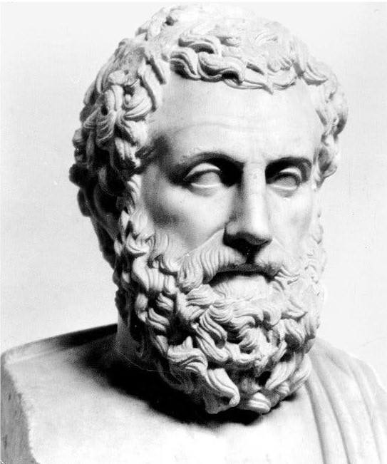
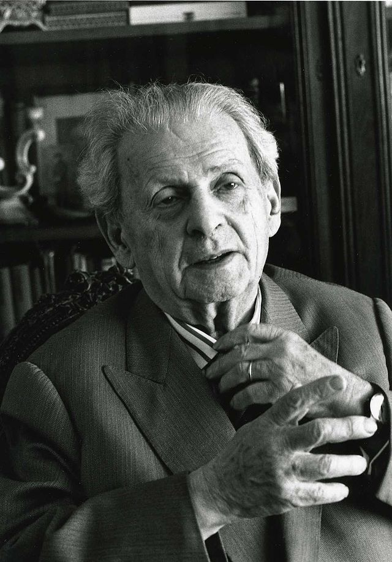
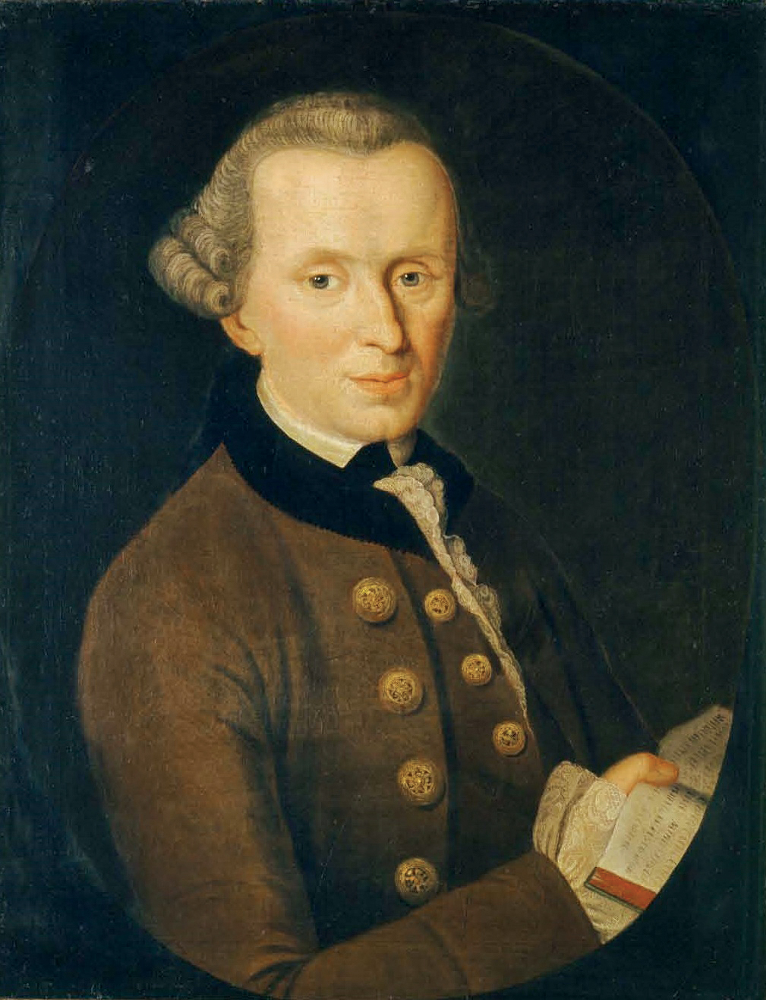

Aristotle's teleological ethics emphasizes how all of our actions are have a purpose, In the Catholic school of thought, it aligns with the
belief that we are created for the purpose of serving God. Aristotle’s virtue ethics focus on developing good character traits, virtues
such as prudence, justice, and temperance through habit and reason, which are essential for moral growth. As a moral agent, a person must
cultivate these virtues to make ethical decisions and contribute to the
common good.
His teleological ethics promote the development of our moral agents helping us act with reason and habit to cultivate good character. A society
that values virtues such as justice and temperance will foster moral responsibility and ethical leadership, ultimately contributing to
the common good.


Immanuel Kant deontological ethics emphasize duty and adherence to moral law, rather than consequences. Kant's categorical imperative—which
states that one should act only according to maxims (universal moral principles) that can be applied universally—resonates with the
Catholic emphasis on absolute moral truths, such as natural law. He upholds autonomy in moral decision-making, meaning individuals must
use their reason to act ethically out of responsibility, not personal gain. His belief in treating others as ends rather than means
aligns with Catholic social teachings on human dignity.
His deontological ethics provide a foundation for laws and policies that uphold justice, human dignity, and universal moral principles.
His emphasis on maxims ensures that moral actions are based on objective ethical standards, reducing corruption and promoting fairness.
By advocating for autonomy, Kant’s philosophy supports human rights and individual freedom while ensuring people act out of duty and
responsibility toward others.
Emmanuel Levinas relational ethics emphasize the ethical responsibility one has toward the Other. He argues that encountering the face
of another person creates a moral obligation, which aligns with Catholic teachings on compassion and justice. Levinas' philosophy
supports the Catholic idea of the preferential option for the poor, urging individuals to recognize their duty to care for the vulnerable.
His ethics highlight the relational nature of morality, where the individual is always accountable to others.
His relational ethics encourage a society based on compassion, justice, and care for the Other. By emphasizing our responsibility
toward others—especially the marginalized—Levinas' ideas inspire social movements, policies, and initiatives that promote solidarity,
human dignity, and ethical decision-making in communities.

| Morality: | Doing the right thing based off ethics and the situation that one is in |
|---|---|
| Teleological Ethics: | This theory of morality is based on the idea that our moral duties and obligations come from what is considered good and or desirable towards the ultimate goal, human excellence. Within this type of ethics, it is believed that every action we take is driven by a reason and serves a specific purpose and we are to live a moral life. |
| Deontological Ethics: | the ethical theory that the morality of an action should be based on whether that action itself is right or wrong under a series of rules and principles such as god, freedom or immortality, rather than based on the consequences of the action. |
| Relational Ethics: | This ethical theory judges actions as right or wrong based on a series of rules or principles, rather than its consequences. |
| Virtues: | A quality and or response to an action that is considered morally good |
| Autonomy: | An individual's ability to act self governing and make independent decisions |
| Responsibility: | To do what you are supposed to do |
| Moral Agent: | A person who acts freely and knowingly, and is accountable for their own actions. |
| Maxims: | A short, concise statement expressing a general truth or rule of conduct. |